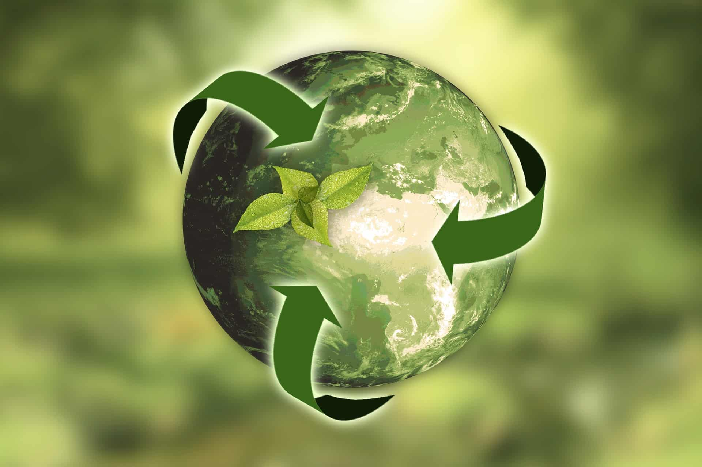

Minimize Packaging Choose products with minimal packaging or
those packaged in recyclable materials. Buying in bulk can also reduce packaging waste.
Use Reusable Bags Bring your own reusable shopping bags when grocery
shopping to reduce the need for single-use plastic bags.
Cut Down on Single-Use Items Replace single-use items like disposable
cups, plates, utensils, and straws with reusable alternatives made from materials like
glass, metal, or bamboo.
Conserve Energy Turn off lights, appliances, and electronics when not
in use. Use energy-efficient appliances and light bulbs to reduce energy consumption.
Opt for Digital Reduce paper waste by opting for digital alternatives
whenever possible, such as online billing and electronic documents.
Choose Sustainable Transportation Use public transportation, carpool,
bike, or walk whenever feasible to reduce carbon emissions from vehicles.
Reuse
Repurpose Items Get creative and find new uses for items instead of throwing them
away. For example, repurpose glass jars as storage containers or plant pots.
Donate or Sell Unwanted Items Instead of throwing away items you no longer need,
donate them to charities or sell them online or at garage sales to give them a new life.
Bring Your Own Containers Use refillable containers for items like beverages, toiletries,
and cleaning products to reduce single-use packaging waste.
Repair Instead of Replace Extend the life of products by repairing them when they
break instead of immediately replacing them. Learn basic repair skills or take items to professionals for repair.
Recycle

Recycling
Separate Recyclables Sort recyclable materials like paper, cardboard, glass, metal, and
plastic into designated bins for recycling.
Buy Recycled Products Support the recycling industry by purchasing products made from
recycled materials whenever possible.
Compost Organic Waste Instead of sending food scraps and yard waste to the landfill,
compost them to create nutrient-rich soil for gardening.
Encourage Others Spread awareness about the importance of recycling and encourage friends,
family, and coworkers to adopt recycling practices in their daily lives.